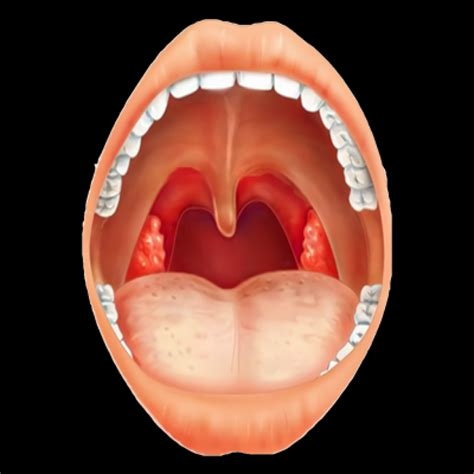
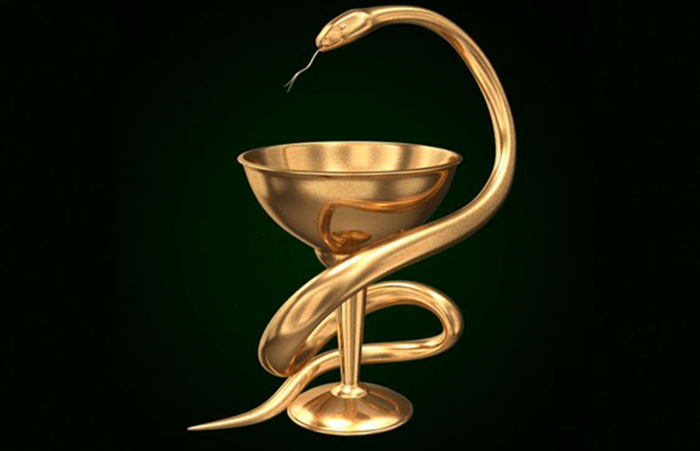

Хронический
тонзиллит

Хронический тонзиллит
Хрони́ческий тонзилли́т — длительное воспаление глоточной и нёбных миндалин (от лат. tonsollitae — миндалевидные железы). Развивается после перенесённой ангины и других инфекционных болезней, сопровождающихся воспалением слизистой оболочки зева (скарлатина, корь, дифтерия), или без предшествующего острого заболевания.
Патогенез
Хронический тонзиллит — классический пример очаговой инфекции, в основе которой лежит развитие очага хронического воспаления в результате длительного присутствия инфекции и реакции на него.Значительная роль в патогенезе хронического тонзиллита принадлежит нарушению функции нервной системы, особенно вегетативной.Развитию заболевания способствуют:
наличие хронических очагов воспаления в полости рта, носа, околоносовых пазух, затруднение носового дыхания, интоксикация;
неблагоприятные климатические условия, условия труда и быта (запыленность, загазованность воздуха);
общее и местное охлаждение;
нерациональное питание.
Наиболее достоверными местными признаками хронического тонзиллита являются:
Гиперемия и валикообразное утолщение краёв нёбных дужек.
Рубцовые спайки между миндалинами и небными дужками.
Разрыхленные или рубцово-измененные и уплотненные миндалины.
Казеозно-гнойные пробки или жидкий гной в лакунах миндалин.
Регионарный лимфаденит — поднижнечелюстные (чаще) и шейные лимфоузлы увеличены и слегка болезненны при надавливании[2].
Диагноз ставят при наличии двух и более вышеперечисленных местных признаков тонзиллита.